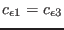

Next: The dynamic psi-equation (Source Up: Fortran: Module Interface turbulence: Previous: The dynamic q2l-equation (Source Contents
INTERFACE:
subroutine dissipationeq(nlev,dt,u_taus,u_taub,z0s,z0b,h,NN,SS)DESCRIPTION:
The  -
- model in its form suggested by Rodi (1987) has been
implemented in GOTM.
In this model, the rate of dissipation is balanced according to
model in its form suggested by Rodi (1987) has been
implemented in GOTM.
In this model, the rate of dissipation is balanced according to
For horizontally homogeneous flows, the transport term appearing in (163) is presently expressed by a simple gradient formulation,
It should be pointed out that not all authors retain the buoyancy term
in (163), see e.g. Gibson and Launder (1976). Similar to the
model of Mellor and Yamada (1982), Craft et al. (1996) set
.
However, in both cases, the  -
- model cannot
predict a proper state of full equilibrium in stratified flows at a
predefined value of the Richardson number (see
Umlauf et al. (2003) and discussion around (114)). Model constants are
summarised in table 7.
model cannot
predict a proper state of full equilibrium in stratified flows at a
predefined value of the Richardson number (see
Umlauf et al. (2003) and discussion around (114)). Model constants are
summarised in table 7.
|
At the end of this routine the length-scale can be constrained according to a suggestion of Galperin et al. (1988). This feature is optional and can be activated by setting length_lim = .true. in gotmturb.nml.
USES:
use turbulence, only: P,B,num
use turbulence, only: tke,tkeo,k_min,eps,eps_min,L
use turbulence, only: ce1,ce2,ce3plus,ce3minus
use turbulence, only: cm0,cde,galp,length_lim
use turbulence, only: epsilon_bc, psi_ubc, psi_lbc, ubc_type, lbc_type
use turbulence, only: sig_e,sig_e0,sig_peps
use util, only: Dirichlet,Neumann
IMPLICIT NONE
INPUT PARAMETERS:
number of vertical layers
integer, intent(in) :: nlev
time step (s)
REALTYPE, intent(in) :: dt
surface and bottom
friction velocity (m/s)
REALTYPE, intent(in) :: u_taus,u_taub
surface and bottom
roughness length (m)
REALTYPE, intent(in) :: z0s,z0b
layer thickness (m)
REALTYPE, intent(in) :: h(0:nlev)
square of shear and buoyancy
frequency (1/s^2)
REALTYPE, intent(in) :: NN(0:nlev),SS(0:nlev)
REVISION HISTORY:
Original author(s): Lars Umlauf
(re-write after first version of
H. Burchard and K. Bolding
$Log: dissipationeq.F90,v $
Revision 1.10 2007-01-06 11:49:15 kbk
namelist file extension changed .inp --> .nml
Revision 1.9 2005/11/15 11:35:02 lars
documentation finish for print
Revision 1.8 2005/11/03 20:53:37 hb
Patankar trick reverted to older versions for
stabilising 3D computations
Revision 1.7 2005/08/11 13:11:50 lars
Added explicit loops for diffusivities for 3-D z-level support.
Thanks to Vicente Fernandez.
Revision 1.6 2005/06/27 13:44:07 kbk
modified + removed traling blanks
Revision 1.5 2003/03/28 09:20:35 kbk
added new copyright to files
Revision 1.4 2003/03/10 13:43:42 lars
double definitions removed - to conform with DEC compiler
Revision 1.3 2003/03/10 09:02:04 gotm
Added new Generic Turbulence Model +
improved documentation and cleaned up code
Karsten Bolding 2012-01-24